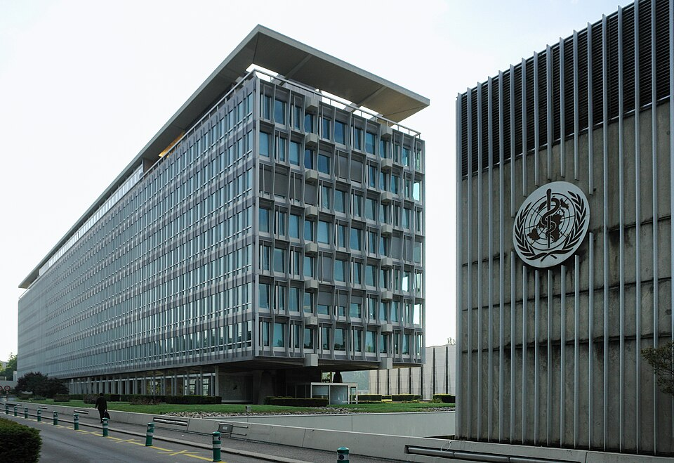
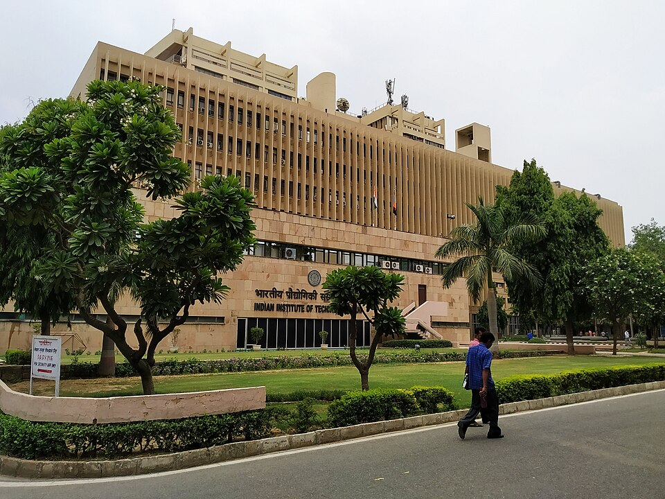
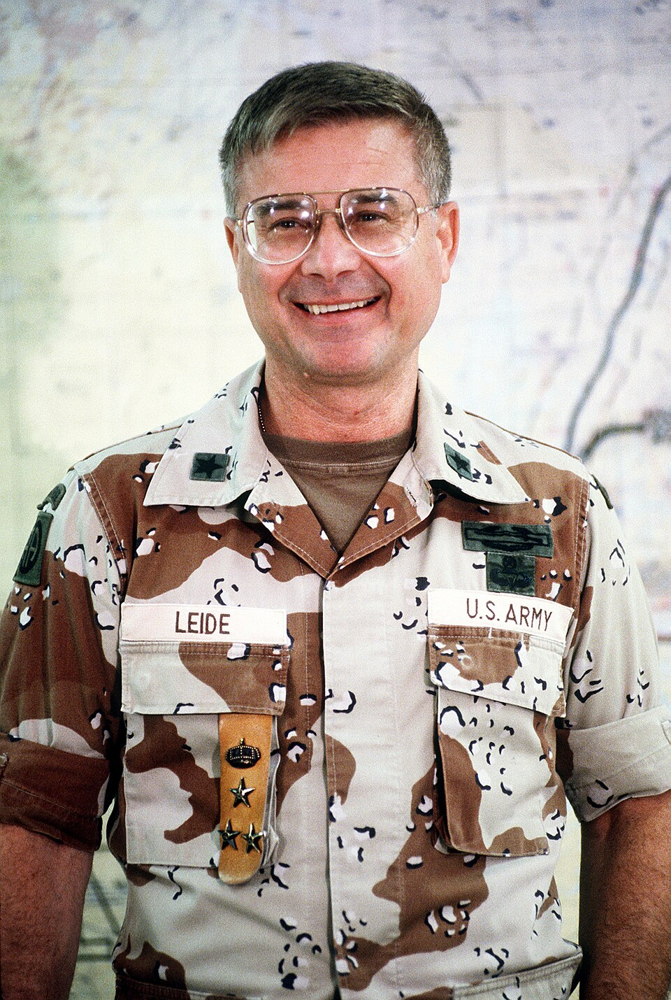
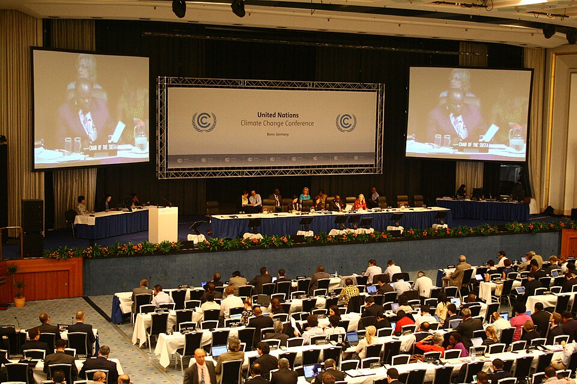
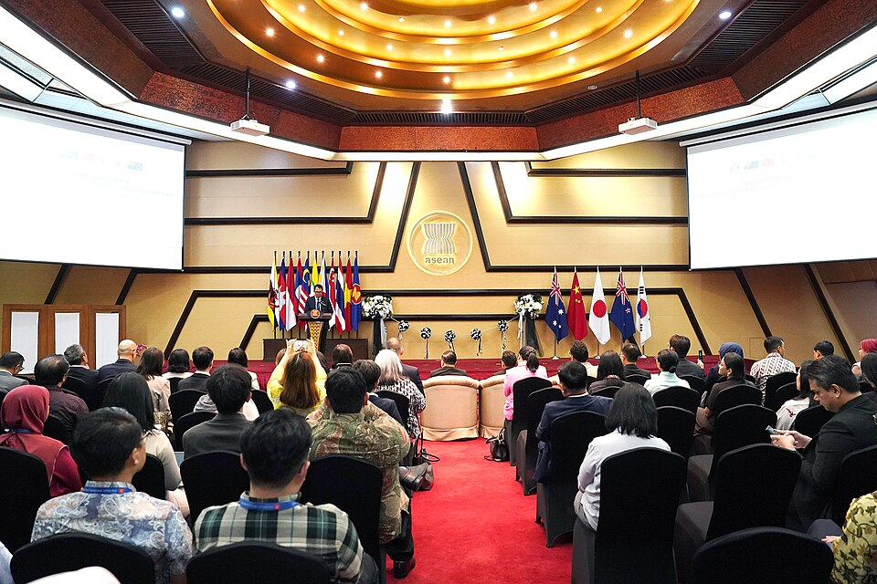
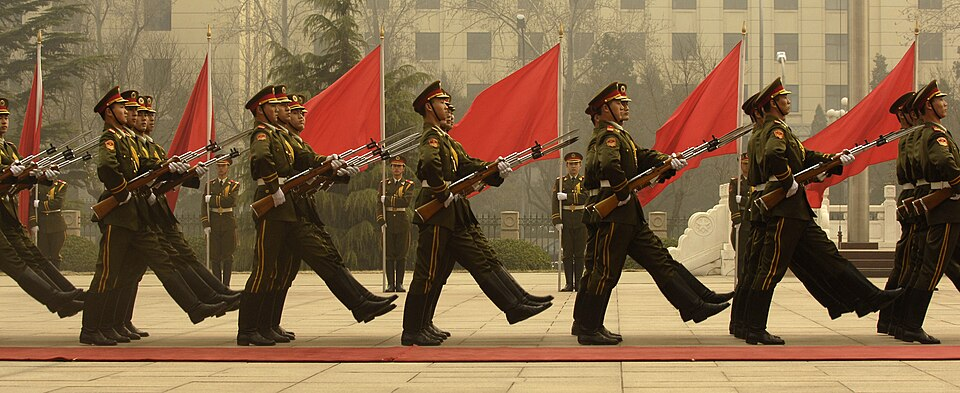
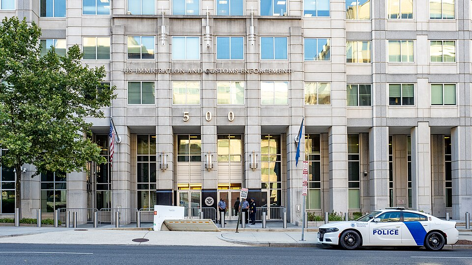

अंतरराष्ट्रीय
बांग्लादेश की पूर्व प्रधानमंत्री शेख हसीना ने 16 दिसंबर को स्वदेश लौटने का किया एलान
बांग्लादेश की पूर्व प्रधानमंत्री शेख हसीना ने 16 दिसंबर को विजय दिवस के मौके पर स्वदेश लौटने की घोषणा की है। उन्होंने दिल्ली से उड़ान की मांग की है, हालांकि प्रत्यर्पण और राजनीतिक तनाव के चलते स्थिति अनिश्चित बनी हुई है।
अंतरराष्ट्रीयईरान में बिना हिजाब कॉन्सर्ट करने पर सिंगर परस्तू अहमदी को 74 कोड़े की सजा
ईरान में बिना हिजाब ऑनलाइन कॉन्सर्ट करने के मामले में महिला सिंगर परस्तू अहमदी और उनकी टीम के चार सदस्यों को 74-74 कोड़े मारे गए हैं। साथ ही दो साल का ट्रैवल और कलात्मक गतिविधियों पर प्रतिबंध लगाया गया है।
अंतरराष्ट्रीयईरान में बिना हिजाब परफ़ॉर्म करने वाली मशहूर सिंगर परस्तू अहमदी को 74 कोड़े मारे गए
ईरान की एक अदालत ने बिना हिजाब परफ़ॉर्म करने वाली मशहूर गायिका परस्तू अहमदी और उनके चार सहयोगियों को 74-74 कोड़े मारने की सज़ा दी है। वकीलों ने इसकी पुष्टि की है।
 अंतरराष्ट्रीय
अंतरराष्ट्रीयडोनाल्ड ट्रंप को हश मनी मामले में सजा रद्द कराने का कानूनी विकल्प मिला
अमेरिकी राष्ट्रपति डोनाल्ड ट्रंप को हश मनी आपराधिक मामले में सजा रद्द कराने का नया रास्ता मिला है। संघीय अपील अदालत ने निचली अदालत के फैसले को पलट दिया है।
 अंतरराष्ट्रीय
अंतरराष्ट्रीयडोनाल्ड ट्रंप ने Nvidia के सीईओ जेसेन ह्वांग की वापसी का किया समर्थन
अमेरिकी राष्ट्रपति डोनाल्ड ट्रंप ने चीन से जुड़े आरोपों के बीच Nvidia के सीईओ जेसेन ह्वांग की कंपनी में वापसी का समर्थन किया है। उन्होंने ह्वांग को देश की बड़ी संपत्ति बताया है।
 अंतरराष्ट्रीय
अंतरराष्ट्रीयडोनाल्ड ट्रंप ने जेम्सन हुआंग की एनवीडिया में वापसी को बताया सही फैसला
अमेरिकी राष्ट्रपति डोनाल्ड ट्रंप ने जेम्सन हुआंग को एनवीडिया के सीईओ पद पर फिर से नियुक्त किए जाने के फैसले का समर्थन किया है। हालांकि, डेमोक्रेटिक नेताओं ने इस पर सवाल उठाए हैं।
 अंतरराष्ट्रीय
अंतरराष्ट्रीयबांग्लादेश: एनसीपी नेता नाहिद इस्लाम ने पीएम रहमान से मुलाकात के बाद भारत पर लगाए आरोप
बांग्लादेश में नेशनल सिटिज़न्स पार्टी के संयोजक नाहिद इस्लाम ने प्रधानमंत्री तारिक रहमान से मुलाकात के बाद भारत पर देश को अस्थिर करने का आरोप लगाया और राजनीतिक दलों से एकजुट होने की अपील की।
 अंतरराष्ट्रीय
अंतरराष्ट्रीयकनाडा में महंगे मकानों के बीच अजनबियों के साथ मिलकर घर खरीद रहे लोग
कनाडा के वैंकूवर और टोरंटो में आसमान छूती मकानों की कीमतों के बीच दो परिवारों ने मिलकर एक प्रॉपर्टी खरीदी है। अजनबियों के साथ मिलकर घर खरीदने का यह नया चलन महंगे होते रियल एस्टेट बाजार में सामने आ रहा है।
 अंतरराष्ट्रीय
अंतरराष्ट्रीयआर्मेनिया के प्रधानमंत्री पशिनयान ने विवादित काराबाख क्षेत्र पर दावा छोड़ने के संकेत दिए
आर्मेनिया के प्रधानमंत्री निकोल पशिनयान ने अजरबैजान के साथ लंबे विवाद को समाप्त करने के लिए देश के संविधान में बदलाव और काराबाख पर दावा छोड़ने के संकेत दिए हैं।

अंतरराष्ट्रीयवैक्सीन की सुरक्षा का परीक्षण कैसे होता है और खसरे के मामले क्यों बढ़ रहे हैं
दुनियाभर में टीकाकरण की दर घटने से खसरे के मामलों में बढ़ोतरी हुई है। विशेषज्ञों ने टीकों के विकास, परीक्षण और उनकी सुरक्षा से जुड़ी प्रक्रिया की जानकारी दी है।

अंतरराष्ट्रीयनेपाल में खुलेगा भारतीय प्रौद्योगिकी संस्थान का ऑफशोर कैंपस: प्रधानमंत्री मोदी
प्रधानमंत्री नरेंद्र मोदी ने घोषणा की है कि नेपाल में भारतीय प्रौद्योगिकी संस्थान (IIT) का एक ऑफशोर कैंपस स्थापित किया जाएगा।
 अंतरराष्ट्रीय
अंतरराष्ट्रीयइसराइल और ग़ज़ा पर राहुल गांधी के बयान से राजनीतिक हलकों में बहस
लोकसभा में नेता प्रतिपक्ष राहुल गांधी के इसराइल के साथ मजबूत संबंधों के समर्थन और ग़ज़ा कार्रवाई की निंदा वाले बयान पर वाम दलों ने आपत्ति जताई है।
अंतरराष्ट्रीयअमेरिका के ओहायो में बेबी शॉवर के दौरान गोलीबारी, संदिग्ध समेत तीन की मौत
अमेरिका के ओहायो राज्य में एक गोद भराई समारोह के दौरान हुई गोलीबारी में संदिग्ध हमलावर समेत तीन लोगों की मौत हो गई और एक महिला घायल हो गई। पुलिस मामले की जांच कर रही है।
 अंतरराष्ट्रीय
अंतरराष्ट्रीयबाल्टिक सागर के नीचे बन रही 18 किलोमीटर लंबी फेहमार्नबेल्ट सुरंग
डेनमार्क और जर्मनी को जोड़ने वाली 18 किलोमीटर लंबी पानी के नीचे की सुरंग का निर्माण तेजी से जारी है। इस प्रोजेक्ट के तहत सड़क और रेल मार्ग दोनों की सुविधा मिलेगी।
 अंतरराष्ट्रीय
अंतरराष्ट्रीयनेपाल के प्रधानमंत्री बालेंद्र शाह ने की प्रधानमंत्री मोदी से मुलाकात
नेपाल के प्रधानमंत्री बालेंद्र शाह दो दिवसीय भारत दौरे पर हैं। नई दिल्ली के हैदराबाद हाउस में प्रधानमंत्री नरेंद्र मोदी के साथ उनकी द्विपक्षीय बैठक हुई।
अंतरराष्ट्रीयएशिया पावर इंडेक्स 2026: भारत तीसरे स्थान पर मजबूत, चीन शीर्ष पर
लोवी इंस्टीट्यूट के एशिया पावर इंडेक्स 2026 के अनुसार, भारत 40.5 अंकों के साथ एशिया का तीसरा सबसे ताकतवर देश बना हुआ है। कूटनीति और रक्षा सहयोग में सुधार से क्षेत्रीय प्रभाव बढ़ा है।
 अंतरराष्ट्रीय
अंतरराष्ट्रीयसैन्य ताकत सिर्फ आत्मरक्षा के लिए, विस्तारवादी इरादा नहीं: किम जोंग उन
उत्तर कोरियाई नेता किम जोंग उन ने कहा है कि उनका देश अपनी सैन्य क्षमता केवल आत्मरक्षा के लिए विकसित कर रहा है और संप्रभुता का सम्मान करने वाले सभी देशों के साथ संबंध बढ़ाने को तैयार है।
 अंतरराष्ट्रीय
अंतरराष्ट्रीयपाकिस्तानी मंत्री मोसद्दिक़ मलिक का भारत दौरा, एससीओ सम्मेलन में लिया हिस्सा
पाकिस्तान के केंद्रीय मंत्री मोसद्दिक़ मलिक शंघाई सहयोग संगठन के सम्मेलन में हिस्सा लेने भारत पहुंचे। मई 2025 के सैन्य संघर्ष के बाद यह किसी पाकिस्तानी मंत्री की पहली भारत यात्रा है।
 अंतरराष्ट्रीय
अंतरराष्ट्रीयहिंदूकुश हिमालय क्षेत्र में मजबूत अल-नीनो से भूस्खलन और बाढ़ का खतरा
मजबूत अल-नीनो के चलते हिंदूकुश हिमालय क्षेत्र में सामान्य से अधिक बारिश, बर्फबारी और ठंड का अनुमान है। इससे नेपाल, अफगानिस्तान और बांग्लादेश में बाढ़ और भूस्खलन का खतरा बढ़ गया है।
 अंतरराष्ट्रीय
अंतरराष्ट्रीयतुर्की में आयोजित कॉप-31 जलवायु सम्मेलन बिना किसी समझौते के समाप्त
तुर्की के अंताल्या में आयोजित कॉप-31 जलवायु सम्मेलन बिना किसी समझौते के समाप्त हो गया। यूरोपीय संघ समेत कई देशों ने फ़ाइनल ड्राफ़्ट को ख़ारिज कर दिया, जिस पर संयुक्त राष्ट्र महासचिव ने गहरी निराशा जताई है।
अंतरराष्ट्रीयअमेरिकी प्रतिनिधि सभा में डेमोक्रेट्स को मिला ऐतिहासिक बहुमत, जीते 258 सीट
अमेरिकी मध्यावधि चुनावों में डेमोक्रेटिक पार्टी ने प्रतिनिधि सभा में 258 सीटों पर जीत दर्ज कर ली है। यह 1992 के बाद से किसी भी पार्टी का सबसे बड़ा बहुमत है।
 अंतरराष्ट्रीय
अंतरराष्ट्रीयब्रिटिश शाही परिवार में नया दावा, राजा बनते ही हैरी की उपाधियां बदल सकते हैं प्रिंस विलियम
शाही लेखक टॉम साइक्स की नई किताब में दावा किया गया है कि प्रिंस विलियम राजा बनने के बाद शाही नियमों में बदलाव कर सकते हैं, जिससे प्रिंस हैरी और मेगन की उपाधियां प्रभावित हो सकती हैं। केंसिंग्टन पैलेस ने इस पर कोई टिप्पणी नहीं की है।
अंतरराष्ट्रीयअमेरिका में और आ सकते हैं टेक्नोलॉजी आउटेज, इंटेलिजेंस चीफ की चेतावनी
यूएस डायरेक्टर ऑफ नेशनल इंटेलिजेंस जे क्लेटन ने चेतावनी दी है कि पुराने सिस्टम अपग्रेड होने के कारण अमेरिका में आने वाले दिनों में और अधिक टेक्नोलॉजी आउटेज और सर्विस में रुकावटें आ सकती हैं।

अंतरराष्ट्रीयअमेरिका में पुराने सिस्टम अपग्रेड होने से आ सकती हैं तकनीकी बाधाएं
यूएस डायरेक्टर ऑफ नेशनल इंटेलिजेंस जे क्लेटन ने चेतावनी दी है कि सिस्टम अपग्रेड के कारण अमेरिका में आने वाले दिनों में टेक्नोलॉजी आउटेज और सर्विस में रुकावटें आ सकती हैं।
 अंतरराष्ट्रीय
अंतरराष्ट्रीयगंगा जल बंटवारा संधि: ढाका में भारत-बांग्लादेश की संयुक्त समिति की बैठक जारी
भारत और बांग्लादेश के बीच गंगा जल बंटवारा संधि के कार्यान्वयन को लेकर ढाका में संयुक्त समिति की बैठक चल रही है। यह समिति दोनों देशों के बीच जल संसाधनों के प्रबंधन की देखरेख करती है।

अंतरराष्ट्रीयCOP31 जलवायु वार्ता बिना किसी अंतिम समझौते के समाप्त, भारत ने निभाई रचनात्मक भूमिका
तुर्किए के अंताल्या में आयोजित संयुक्त राष्ट्र जलवायु सम्मेलन (COP31) बिना किसी व्यापक समझौते के समाप्त हो गया। केंद्रीय पर्यावरण मंत्री भूपेंद्र यादव ने कहा कि भारत ने वार्ताओं के दौरान रचनात्मक भूमिका निभाई।
अंतरराष्ट्रीयअमेरिका के पहले राष्ट्रपति जॉर्ज वॉशिंगटन के बालों का गुच्छा नीलाम
अमेरिका के पहले राष्ट्रपति जॉर्ज वॉशिंगटन के बालों का एक गुच्छा नीलामी में 4,000 डॉलर यानी करीब 3.71 लाख रुपये में बिका है। यह ऐतिहासिक निशानी 1799 की है।
 अंतरराष्ट्रीय
अंतरराष्ट्रीयविदेश मंत्री एस. जयशंकर ने नेपाल के प्रधानमंत्री बालेन शाह और नीदरलैंड के विदेश मंत्री से की मुलाकात
विदेश मंत्री एस. जयशंकर ने दिल्ली में नेपाल के प्रधानमंत्री बालेन शाह और नीदरलैंड के विदेश मंत्री टॉम बेरेंडसन से मुलाकात की। बैठकों में व्यापार, ऊर्जा, तकनीक और द्विपक्षीय संबंधों को मजबूत करने पर चर्चा हुई।

अंतरराष्ट्रीयदक्षिण चीन सागर आचार संहिता पर चीन और आसियान के बीच नहीं बनी सहमति
फिलीपींस की अध्यक्षता में हुए शिखर सम्मेलन में दक्षिण चीन सागर के लिए आचार संहिता को अंतिम रूप देने का प्रयास विफल रहा। बाध्यकारी नियमों और भौगोलिक दायरे को लेकर विवाद बना हुआ है।
 अंतरराष्ट्रीय
अंतरराष्ट्रीयभारत दौरे पर आए पाकिस्तानी मंत्री मुसादिक मलिक ने आतंकवाद पर साक्ष्य आधारित चर्चा की वकालत की
एसएससी के एक कार्यक्रम में भारत आए पाकिस्तानी मंत्री मुसादिक मलिक ने आतंकवाद के मुद्दे पर साक्ष्य आधारित और सामूहिक चर्चा की बात कही है। उन्होंने कहा कि आतंकवाद से पूरा क्षेत्र प्रभावित है।
अंतरराष्ट्रीयभारत के न्योते पर द्विपक्षीय बातचीत को तैयार हैं पाक मंत्री मुसादिक मसूद मलिक
पाकिस्तान के मंत्री मुसादिक मसूद मलिक ने कहा है कि आतंकवाद और सिंधु जल संधि जैसे मुद्दों पर भारत के साथ द्विपक्षीय बातचीत के लिए उन्हें अब तक कोई औपचारिक आमंत्रण नहीं मिला है।
अंतरराष्ट्रीयएस जयशंकर और नीदरलैंड के विदेश मंत्री की दिल्ली में द्विपक्षीय बैठक
विदेश मंत्री एस जयशंकर ने नई दिल्ली में नीदरलैंड के अपने समकक्ष टॉम बेरेन्ड्सन से मुलाकात की। बैठक में सेमीकंडक्टर, रक्षा, स्वच्छ ऊर्जा और वैश्विक मुद्दों पर चर्चा हुई।
 अंतरराष्ट्रीय
अंतरराष्ट्रीयपेरिस में महंगाई के खिलाफ प्रदर्शन हिंसक, पुलिस ने दागे आंसू गैस के गोले
फ्रांस की राजधानी पेरिस में बढ़ती महंगाई के खिलाफ हो रहा प्रदर्शन हिंसक हो गया है। हालात को नियंत्रित करने के लिए पुलिस को आंसू गैस के गोले दागने पड़े।
 अंतरराष्ट्रीय
अंतरराष्ट्रीयव्लादिमीर पुतिन ने की भारत की प्राचीन सभ्यता और भाषाई विविधता की प्रशंसा
रूसी राष्ट्रपति व्लादिमीर पुतिन ने भारत की प्राचीन सभ्यता और भाषाई विविधता की सराहना की है। पीएम मोदी के साथ हुई बातचीत में रक्षा, ऊर्जा और व्यापार समेत विभिन्न मुद्दों पर चर्चा हुई।
 अंतरराष्ट्रीय
अंतरराष्ट्रीयनेपाल के प्रधानमंत्री बालेन शाह आधिकारिक यात्रा पर नई दिल्ली पहुंचे
नेपाल के प्रधानमंत्री बालेन शाह नई दिल्ली पहुंच गए हैं। अपनी इस यात्रा के दौरान दोनों देशों के बीच द्विपक्षीय आर्थिक संबंधों और व्यापार को मजबूत करने पर चर्चा होगी।
अंतरराष्ट्रीयनेपाल के प्रधानमंत्री बालेन्द्र शाह अपनी पहली विदेश यात्रा पर दिल्ली पहुंचे
नेपाल के प्रधानमंत्री बालेन्द्र शाह दो दिवसीय राजकीय यात्रा पर रविवार को नई दिल्ली पहुंचे। मार्च 2026 में पदभार संभालने के बाद यह उनका पहला विदेशी दौरा है, जिसके तहत वे प्रधानमंत्री नरेंद्र मोदी से द्विपक्षीय बातचीत करेंगे।
अंतरराष्ट्रीयनेपाल के प्रधानमंत्री बालेन्द्र शाह दो दिवसीय राजकीय यात्रा पर नई दिल्ली पहुंचे
नेपाल के प्रधानमंत्री बालेन्द्र शाह अपनी पहली द्विपक्षीय विदेश यात्रा पर रविवार को नई दिल्ली पहुंचे। इस दौरान व्यापार, ऊर्जा और कनेक्टिविटी पर चर्चा होगी।
 अंतरराष्ट्रीय
अंतरराष्ट्रीयवेल्स की राजकुमारी कैथरीन ने बीबीसी डॉक्यूमेंट्री में कैंसर से अपने संघर्ष को साझा किया
वेल्स की राजकुमारी कैथरीन ने बीबीसी की आगामी डॉक्यूमेंट्री 'हील' में कैंसर के अपने अनुभव और इस बीमारी से जीवन में आए बदलावों के बारे में खुलकर बात की है।
अंतरराष्ट्रीयएसएस राजामौली की फिल्म 'वाराणसी' 18 फॉर्मेट में होगी रिलीज
एसएस राजामौली की आगामी फिल्म 'वाराणसी' दुनिया भर में 18 अलग-अलग फॉर्मेट में रिलीज होगी। यह फिल्म IMAX 1.43:1 आस्पेक्ट रेशियो में आने वाली पहली गैर-अंग्रेजी फिल्म बताई जा रही है।
अंतरराष्ट्रीयइटली में सोनिया गांधी का पुश्तैनी घर म्यूजियम में बदला, गांधी परिवार को मिला न्योता
इटली में सोनिया गांधी के पुश्तैनी घर को एक म्यूजियम के रूप में विकसित किया गया है। घर के मौजूदा मालिक ने गांधी परिवार को इसे देखने के लिए आमंत्रित किया है।
अंतरराष्ट्रीयबांग्लादेश में राजनीतिक हिंसा तेज, बीएनपी और अवामी लीग समर्थकों में झड़प
बांग्लादेश में बीएनपी और अवामी लीग समर्थकों के बीच भड़की हिंसा के बाद देश भर में बॉर्डर गार्ड बांग्लादेश के 90 प्लाटून तैनात किए गए हैं।
अंतरराष्ट्रीयअमेरिका के न्यूयॉर्क में सड़क हादसे में तेलंगाना के 25 वर्षीय युवक की मौत
अमेरिका के न्यूयॉर्क में सड़क हादसे में तेलंगाना के 25 वर्षीय ई. साई तेजा की मौत हो गई। इंटरस्टेट 90 हाईवे पर उनकी कार एक हिरण से टकरा गई थी, जिसके बाद पीछे से आ रही वैन ने टक्कर मार दी।
 अंतरराष्ट्रीय
अंतरराष्ट्रीयपाकिस्तानी मंत्री मुसादिक मलिक के दिल्ली दौरे और एससीओ भाषण की वहां के मीडिया में चर्चा
शंघाई सहयोग संगठन के सम्मेलन में हिस्सा लेने नई दिल्ली आए पाकिस्तानी मंत्री मुसादिक मलिक के भाषण और दौरे को वहां के मीडिया में प्रमुखता से जगह दी गई है।
अंतरराष्ट्रीयनेपाल के प्रधानमंत्री बालेंद्र शाह दो दिवसीय भारत दौरे पर नई दिल्ली पहुंचे
नेपाल के प्रधानमंत्री बालेंद्र शाह प्रधानमंत्री नरेंद्र मोदी के निमंत्रण पर दो दिवसीय आधिकारिक यात्रा पर रविवार को नई दिल्ली पहुंचे। वह विदेश मंत्री से मिले और सोमवार को प्रधानमंत्री मोदी से बातचीत करेंगे।
अंतरराष्ट्रीयअमेरिका के सिएटल एयरपोर्ट पर आईसीई अधिकारियों ने दो यात्रियों को हिरासत में लिया
अमेरिका के सिएटल-टाकोमा अंतरराष्ट्रीय हवाई अड्डे पर इमीग्रेशन अधिकारियों ने बोर्डिंग के दौरान दो लोगों को हिरासत में लिया। इस दौरान उड़ान में भी देरी हुई।

अंतरराष्ट्रीयशेनझेन में ट्रंप, पुतिन और शी जिनपिंग की बैठक से क्या बदलेंगे वैश्विक समीकरण
अमेरिका, रूस और चीन के शीर्ष नेताओं की शेनझेन में हुई बैठक के बाद दुनिया की बड़ी ताक़तों के नए समीकरण और भारत जैसे देशों की भूमिका को लेकर चर्चा तेज़ हो गई है।
अंतरराष्ट्रीयईरान के रिवोल्यूशनरी गार्ड ने बहरीन में अमेरिकी रडार को बनाया निशाना
ईरान के रिवोल्यूशनरी गार्ड कॉर्प्स (IRGC) ने बहरीन में दो अमेरिकी पैट्रियट एयर डिफेंस रडार पर मिसाइल और ड्रोन से हमला करने का दावा किया है।

अंतरराष्ट्रीयअमेरिका में 20 महीनों के दौरान छह हजार से अधिक भारतीय नागरिक गिरफ्तार
अमेरिकी इमिग्रेशन एजेंसी की कार्रवाई के तहत जनवरी 2025 से अगस्त 2026 के बीच 6,100 से अधिक भारतीयों को गिरफ्तार किया गया है। इनमें से हजारों लोगों को डिपोर्ट किया जा चुका है।
 अंतरराष्ट्रीय
अंतरराष्ट्रीयइजरायल के पूर्व पीएम नफ्ताली बेनेट ने नेतन्याहू के नेतृत्व में काम करने से किया इनकार
इजरायल के पूर्व प्रधानमंत्री नफ्ताली बेनेट ने गादी आइजेनकोट के नेतृत्व में सरकार बनाने का समर्थन किया है। उन्होंने बेंजामिन नेतन्याहू या उनके गुट के साथ काम करने की संभावना को खारिज कर दिया है।
अंतरराष्ट्रीयSCO सम्मेलन में बोले पाकिस्तानी मंत्री मलिक, सभ्यताओं के मिलन से बनी है दिल्ली
दिल्ली में आयोजित एससीओ सभ्यतागत संवाद मंच में पाकिस्तानी मंत्री मुसादिक मलिक ने हुमायूं और शेरशाह सूरी का जिक्र किया। उन्होंने कहा कि साझा संस्कृति और संवाद से ही पूरे क्षेत्र को आगे बढ़ाने में मदद मिल सकती है।
अंतरराष्ट्रीयनेपाल के प्रधानमंत्री बालेन शाह आज नई दिल्ली पहुंचेंगे, द्विपक्षीय वार्ताओं पर रहेगी नजर
नेपाल के प्रधानमंत्री बालेन शाह आज आधिकारिक यात्रा पर नई दिल्ली पहुंच रहे हैं। माना जा रहा है कि दोनों देशों के बीच कई अहम मुद्दों पर पहले ही सहमति बन चुकी है, जिसकी घोषणा इस दौरे पर हो सकती है।
अंतरराष्ट्रीयनेपाल के प्रधानमंत्री बालेंद्र शाह आज से दो दिवसीय आधिकारिक भारत दौरे पर
नेपाल के प्रधानमंत्री बालेंद्र शाह रविवार से दो दिन की आधिकारिक यात्रा पर भारत आ रहे हैं। पदभार संभालने के बाद यह उनकी पहली विदेश यात्रा है, जिसमें उनके साथ 34 सदस्यीय प्रतिनिधिमंडल भी आ रहा है।
अंतरराष्ट्रीयअमेरिका में सड़क हादसे में तेलंगाना के युवक की मौत, एक सप्ताह पहले लगी थी नौकरी
अमेरिका में एक सड़क हादसे में तेलंगाना के एक युवक की मौत हो गई है। राज्य के मंत्री कोमाटिरेड्डी वेंकट रेड्डी ने इस घटना पर दुख जताया है और बताया कि युवक को एक सप्ताह पहले ही नौकरी मिली थी।